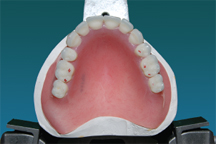
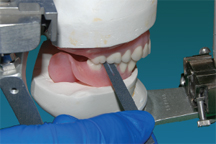

Procedure:
Selective Grinding of Non-Anatomic Teeth
- When non-cusp form posterior teeth or a non-balanced lingualized occlusal scheme are used and selective grinding procedures are instituted, the occlusal surfaces of the posterior teeth are altered to make harmonious contact on the right side and on the left side when the jaws are in centric relation.
- Secure the condylar elements on the articulator against the condylar housings and place articulating tape over the occlusal surfaces and incisal edges of all of the mandibular teeth. Tap the teeth together to record the contacting areas.
Stripping Method for The Occlusal Equilibration of Non-anatomic Teeth
- The simplest technique to refine the occlusion for cuspless, nonanatomic teeth or a non-balanced lingualized occlusal scheme is the carborundum stripping technique, which was originally published by Dr. Gronas in 1970. It, like all procedures in dentistry, if followed correctly, will give excellent results. The primary purpose of nonanatomic posterior teeth when set on a flat plane is to eliminate cuspal inferences. Therefore, it is necessary during the selective grinding procedure in this technique to maintain the previously established flat occlusal scheme. A rotary instrument usually produces irregularities in the flat occlusal surfaces. Waterproof carborundum abrasive paper is the most ideal material to use with this method. A fine 320 grit paper is used for acrylic resin teeth. Strips of the abrasive paper should be cut in varying widths to allow for the reduction of individual teeth or to reduce entire quadrants. It should be remembered that the flatness of the occlusal surfaces of the mandibular teeth must be maintained throughout the entire grinding procedure.
- Locate the premature contacts with articulating ribbon or paper.

Fig 01
Fig 02 - If there is a grossly tipped tooth that is above the occlusal plane, reduce the tooth with a stone or bur until a flat occlusal plane is obtained. Place a carborundum strip of the appropriate width with the abrasive side against the teeth that are to be reduced (maxillary), and gently close the articulator in centric relation. Apply tight pressure to the upper member of the articulator, and pull the strip briskly between the teeth. Always pull the strip in the same plane as the flat occlusal surfaces of the teeth in order to avoid rounding of the bucco-occlusal angle of the teeth. (Fig 03)

Fig 03 - Evaluate the occluding vertical dimension carefully throughout the procedure, as the rapid reduction of the occlusal surfaces could allow over closure past the original vertical dimension. Reduction of the contacts with the strips is continued by stripping an equal number of times until uniform bilateral contacts on the posterior teeth are obtained. (Fig 04)

Fig 04 - Finish the reduction with finer grits of sandpaper strips in order to produce a smoother flat surface. Check each eccentric position (working, non-working, protrusive) and remove any premature contacts with a flat stone while maintaining a flat occlusal plane. Following the adjustment of the eccentric positions, the centric occlusion should again be checked and any necessary modifications made with the abrasive strips of the appropriate width along with ensuring that there is no contacting of the maxillary and mandibular anterior teeth in that position.